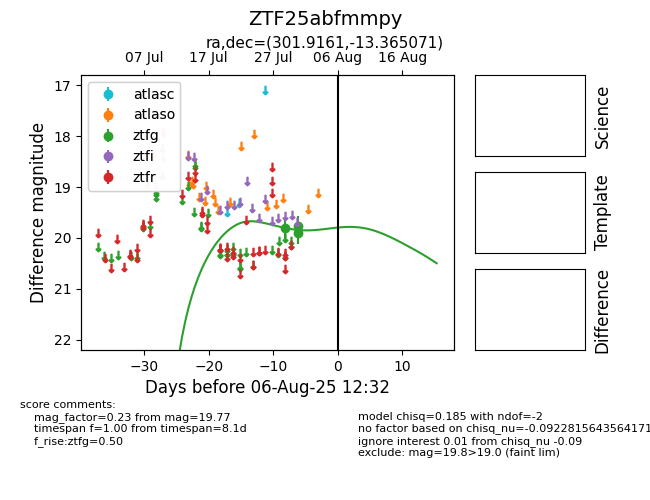

Target ZTF25abfmmpy at 2025-08-06 17:07, see:
FINK: fink-portal.org/ZTF25abfmmpy
Lasair: lasair-ztf.lsst.ac.uk/objects/ZTF25abfmmpy
ALeRCE: alerce.online/object/ZTF25abfmmpy
alt names
ZTF25abfmmpy (ztf,fink)
coordinates:
equatorial (ra, dec) = (301.9161,-13.36507)
galactic (l, b) = (29.1445,-22.83734)
photometry
last ztfg=19.77
3 ztfg detections
